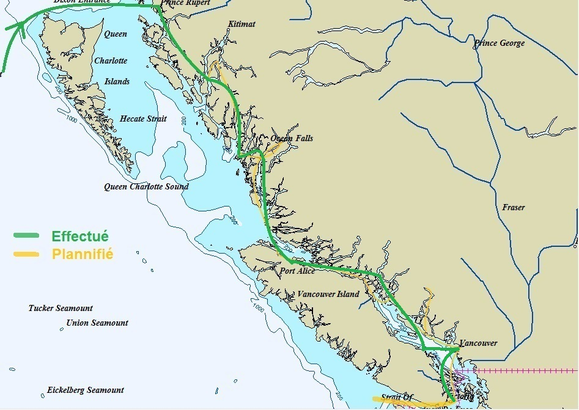

|
Prince Rupert. Arrivée dans un petit port à la limite de l'Alaska. Dorénavant, on n'ira que vers le sud et la chaleur.
 Voir notre avis |
 |
| Date | Lieu | Log (nm) |
| 30/06/2013 au 09/07/2013 | Prince Rupert | 22585 |
| 09/07/2013 au 11/07/2013 | Gunboat Harbour | 22610 |
| 11/07/2013 au 12/07/2013 | Grenville Channel | 22630 |
| 12/07/2013 au 13/07/2013 | Coghlan Anchorage | 22660 |
| 13/07/2013 au 14/07/2013 | Green Spit | 22695 |
| 14/07/2013 au 15/07/2013 | Work Bay | 22720 |
| 15/07/2013 au 16/07/2013 | Unnamed Bay | 22755 |
| 16/07/2013 au 17/07/2013 | Beales Bay | 22790 |
| 17/07/2013 au 18/07/2013 | Fougner Bay | 22815 |
| 18/07/2013 au 19/07/2013 | Millbrook Cove | 22855 |
| 19/07/2013 au 20/07/2013 | Blunden Harbour | 22895 |
| 20/07/2013 au 23/07/2013 | Port Mc Neil | 22915 |
| 23/07/2013 au 24/07/2013 | Port Harvey | 22950 |
| 24/07/2013 au 25/07/2013 | Crawford Anchorage | 22985 |
| 25/07/2013 au 26/07/2013 | Squirel Cove | 23020 |
| 26/07/2013 au 27/07/2013 | Cochrane Island | 23045 |
| 27/07/2013 au 28/07/2013 | Nelson Island | 23085 |
| 28/07/2013 au 28/07/2013 | Jedediah Island | 23100 |
| 28/07/2013 au 29/07/2013 | Dolphin Beach | 23115 |
| 29/07/2013 au 12/08/2013 | Vancouver | 23155 |
| 12/08/2013 au 13/08/2013 | Kendrick Island | 23180 |
| 13/08/2013 au 14/08/2013 | Thetis Island | 23190 |
| 14/08/2013 au 15/08/2013 | Montague Harbour | 23205 |
| 15/08/2013 au 20/08/2013 | Bedwell Harbour | 23220 |
| 20/08/2013 au 21/08/2013 | Sidney | 23230 |
| 21/08/2013 au 22/08/2013 | D'Arcy Island | 23240 |
| 22/08/2013 au 24/08/2013 | Chatham Islands | 23250 |
| 24/08/2013 au 26/08/2013 | Victoria | 23250 |